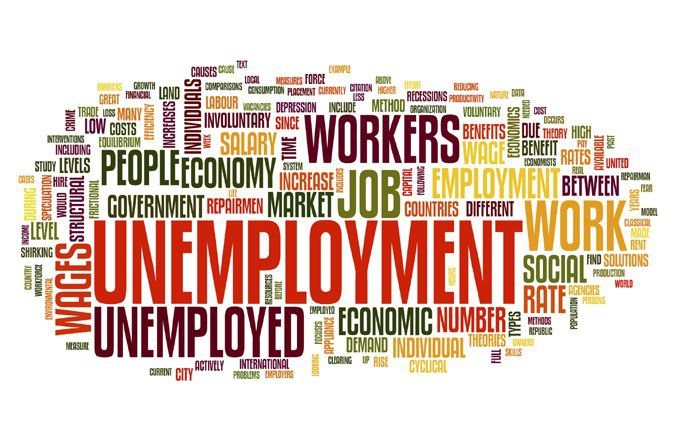
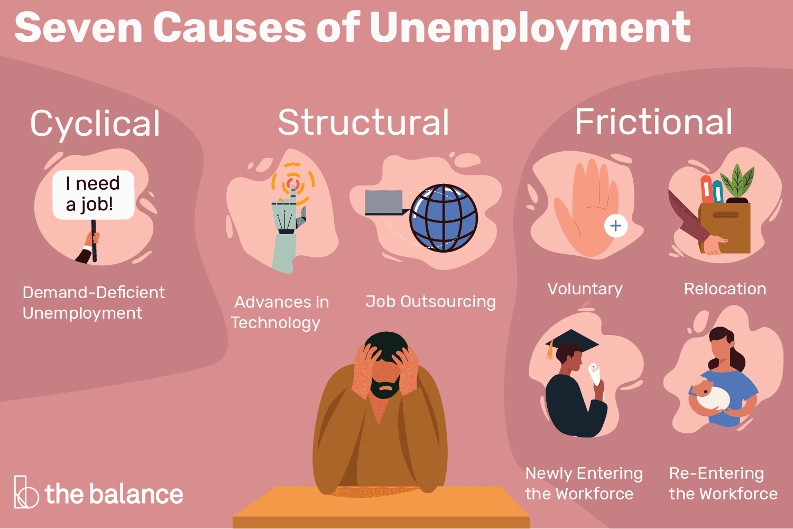

Unemployment is a socio-economic phenomenon reflecting the state of individuals who, despite being capable and willing to work, are unable to secure employment opportunities. It is a critical indicator of economic health, measured as a percentage of the workforce actively seeking employment but unable to find suitable jobs. Unemployment can manifest in various forms, including frictional unemployment arising from job transitions, structural unemployment resulting from a mismatch of skills and job requirements, cyclical unemployment tied to economic downturns, and seasonal unemployment affected by periodic fluctuations in labor demand. Addressing unemployment is a key focus for policymakers, involving measures such as economic stimulus, job training initiatives, and structural reforms to promote a robust and sustainable labor market.

Unemployment can stem from diverse factors. Economic downturns, known as cyclical factors, contribute to job losses as businesses cut back during recessions. Structural changes, such as technological advancements and shifts in consumer preferences, may render certain skills obsolete, leading to unemployment. Mismatched skills between the workforce and available jobs, often exacerbated by rapid technological evolution, contribute to structural unemployment. Automation and increased use of technology can displace jobs, while seasonal fluctuations in industries like agriculture or tourism result in periodic unemployment. Government policies, either fostering a conducive business environment or creating obstacles, influence employment levels. Global economic conditions, demographic shifts, and the dynamics of entrepreneurship also play roles in shaping unemployment trends. Addressing unemployment requires a comprehensive approach, encompassing macroeconomic policies, education and training initiatives, and efforts to stimulate economic growth and job creation in emerging sectors. Policymakers aim to minimize frictional and structural unemployment while mitigating the impact of cyclical economic fluctuations on the labor market.
Addressing unemployment necessitates a multifaceted approach. Education and training programs are key to bridging the skills gap, ensuring individuals are equipped for the evolving job market. Labor market reforms that enhance flexibility, infrastructure investments, and support for entrepreneurship can stimulate job creation. Sound macroeconomic policies, including fiscal measures during economic downturns, contribute to overall economic health. Diversifying industries reduces vulnerability, and social safety nets, such as unemployment benefits and retraining programs, provide support during transitions. International collaboration and trade agreements are vital in our interconnected world. Workforce development partnerships align education with labor market needs, while promoting flexible work arrangements accommodates changing employment trends. By combining these strategies, governments, businesses, and communities can work together to mitigate unemployment and foster a resilient, inclusive job market.